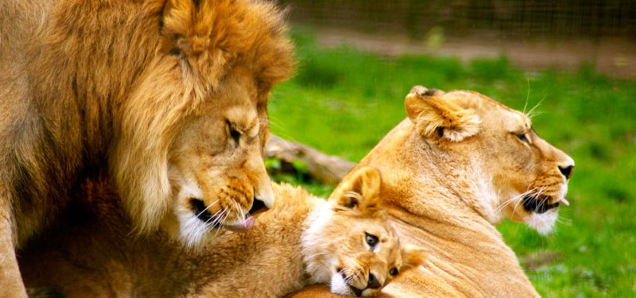

Las familias de leones

Unidad Familiar Fuerte: Los leones son conocidos por formar fuertes lazos familiares. Tanto el macho como la hembra, junto con otros leones de la manada, contribuyen al cuidado y protección de los cachorros. Esta unidad fortalece su supervivencia y les brinda seguridad.
Cuidado y Protección Compartidos: Tanto los machos como las hembras juegan roles activos en el cuidado de los cachorros. Mientras las leonas cazan y proveen alimento para la manada, los machos a menudo protegen el territorio y a los cachorros de posibles amenazas.
Enseñanzas y Aprendizaje: Los cachorros aprenden habilidades vitales para la supervivencia a través del juego y la observación de los adultos. Desde técnicas de caza hasta comportamientos sociales, los cachorros absorben conocimientos de sus padres y otros miembros de la manada.
Fomento del Vínculo Familiar: La interacción entre los cachorros y los adultos fortalece los vínculos familiares. El juego entre hermanos y con los adultos no solo es vital para el desarrollo físico y mental de los cachorros, sino que también ayuda a establecer relaciones sólidas dentro de la manada.
Sentido de Comunidad: La crianza de los cachorros no se limita solo a los padres biológicos. Otros miembros de la manada, como tías, tíos y hermanos mayores, también participan en la protección y el cuidado de los cachorros. Esto fomenta un sentido de comunidad y cooperación dentro de la manada.
En resumen, la presencia de cachorros en una familia de leones no solo añade vitalidad y alegría, sino que también fortalece los lazos familiares y promueve un sentido de comunidad y cooperación entre los miembros de la manada.